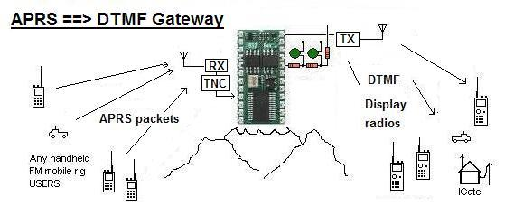
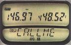
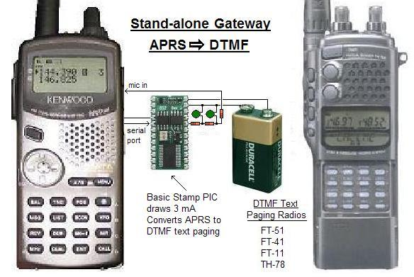
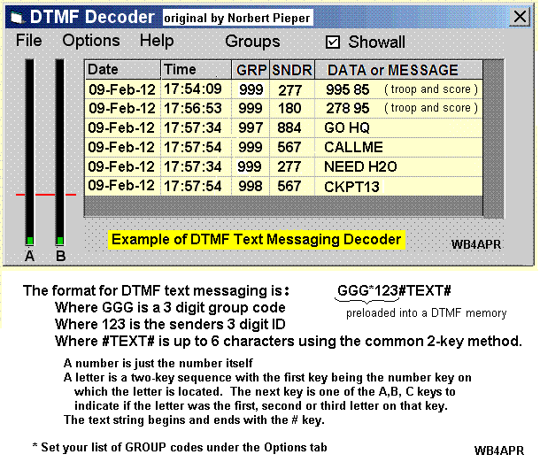

This web page topic is just part of a larger APRS objective to provide
useful local information content directly to Amateur radio operators in
the field. This part describes converting local APRS data to DTMF
paging format for display on the tens of thousands of DTMF Paging Radios.
This topic is just one of the 6 bullets on the main DTMF Texting page:
* The routine display of local APRS data from an APRS=>DTMF Gateway.
The Yaesu FT-11R, FT-41R, & FT-51R and Kenwood TH-78 HT's all contain
a DTMF message TX and RX display system. The display is only 6 bytes
wide but can be combined into up to 10 such windows for a full length
of 60 bytes of uppercase alpha/numeric message text and data.

We can use these radios for RECEIPT of APRS local
information of value to the traveler and for receiving
messages from the global APRS messaging system.
For example, they can selectively display these
categories:
FIXED Stations (bearing and range from Gate, and PHG data)
MOBILE Stations (Bearing and range from Gate, and Course and Speed
WEATHER stations (Wind direction and speed and temp)
DIGIPEATERS (bearing and range from Gate, and Wn-N supported
MESSAGES (in 6 byte sextets)
FREQUENCIES (for any station sending FFF.FFFMHz info)
STATUS (any status packet)
So, with this APRS=>DTMF gateway, not only can these radios receive
DTMF Text messaging from *ANY* other amateur radio with a DTMF key
pad, they can also now receive all local APRS activity on their front
panel displays.

GATEWAY IMPLEMENTATION: This gateway is implemented on the
readily available Parallax BASIC Stamp PIC processor. As shown above
all you add is power, and a 2 stage RC filter. It receives APRS
data from ANY TNC (shown here connected to the serial port of a D7
and after converting to DTMF, it sends the audio to the D7 transmitter
on the local PAGING frequency (maybe 146.58 MHz?).
The IDEAL implementation would be entirely in software on a PC using
only the sound card input to listen to the APRS channel and then
sound card output to send the DTMF. This then could use ANY radio.
KEEPING IT LOCAL! Of course, the typical APRS digipeater in an area
is handling dozens pf packets per minute, but usually 95% or more of
those packets are coming in from out of area and are not involved in
the local tactial situation. FOr this reason, the APRS=>DTMF gateway
monitors ONLY for DIRECT and 1 HOP packets via only the LOCAL APRS
digipeater. This lets the DTMF user see everyone else local, but
not be bothered by distant APRS activity.
INFORMATION DISPLAY: Of course displaying the variety of APRS formats
on the small 6 byte window of the DTMF radio is a challenge, but once
the organization of data is observed, the formats are self explanatory.
The key element is that all positions, like the original APRStt, are
represented as a BEARING and DISTANCE from the Gateway (or other reference).
BEARING is reported in C: CLOCK angles: 1 to 12 o'clock as 1-9,T,E,V
DISTANCE is reported in MM: integer miles or kilometers
SYMBOL is reported in $: F=fixed, C=car, T=truck, V=van, B=boat etc
HEADING is reported in H: N,S,E or W
SPEED is reported in S: TENS of MPH or KPH ie 6 = 60 MPH
PHG is reported as P#: where # is the Height digit
Specific display formats and examples
MOBILE: CMM$HS
T15CN6 is a car at 10 o'clock 15 miles away headed N at 60
605VE3 is a van at 6 o'clock 5 miles away headed E at 30
FIXED STN: CMMFPH
308FP3 at 3 o'clock, 8mi with Height of 3 (80')
MESSAGES: MMMMMM is a 6 byte message
FREQUENCY: FFFFFF is frequency in KHz
WEATHER: CMMWTT
412W32 Winds from 4 o'clock at 12 MPH and temperature of 32 degF
DIGIPEATER: CMMDW#
E45DW2 a DIGI at 11 o'clock 45 miles supporting WIDE2-2
RECEIVING FROM ANY OTHER HT (not just APRS!): Remember, these radios
can also receive TEXT MESSAGING from *ANY* other amateur radio with
a DTMF key pad. THis lets these radios serve as receive/display units
at special events. And since *everyone* at the event (not just APRS or
DTMF paging radios) can send DTMF text messages and data into net control
then net control can run a DTMF decoding program to get this data in
real time:

It is assumed that this FT51/TH78 Gateway process will be added to
the general APRS Touchtone system for ease of distribution and maintenance.
This web page shows how it can be applied to a small stand-alone PIC
processor to make it easy to implement at very high and
remote repeater locations to serve very large areas.
First of all, since there are going to be a lot of DTMF tones flying
around, it is recommended that the HT51/78 gateway have its own
local frequency dedicated to these radio users.
The DTMF format used by these radios (see DTMF-Paging spec) is:
GGG*CCC is the header to open the paging squelch
#MMMMMMMMMMMM# is the message (after the page)
#mmmmmmmmmmmm# is and additional line of text, etc
Where GGG is the TO-CALL or GROUP PAGE (999) for APRS
Where CCC is the sending station's Caller ID. This is usually
formed as the numeric equivalent of the stations
amateur call suffix. Example, APR is 277.
Where MMMMMMMMMMM is up to 6 bytes of text entered using the
two-key method of these radios. That is, press the desired letter
key, ABC, DEF, GHI, etc and then press the "A" key if the letter was
the first one listed on the key. Or press "B" key if it was the
second letter, or press the "C" key if it was third. If it is a
numeral, then there is no following special key. The 1 key is
used for QZ_. So Q is 1A, Z is 1B and SPACE is 1C.
Notice that these radios not only monitor the TTT group code, but
also their own individual codes. So an APRS message can be sent to
an INDIVIDUAL radio. The APRS=>HT51/78 gateway can automatically do
the conversion from callsign suffix to the matching 3 digit TTT ID.
Bob, Wb4APR